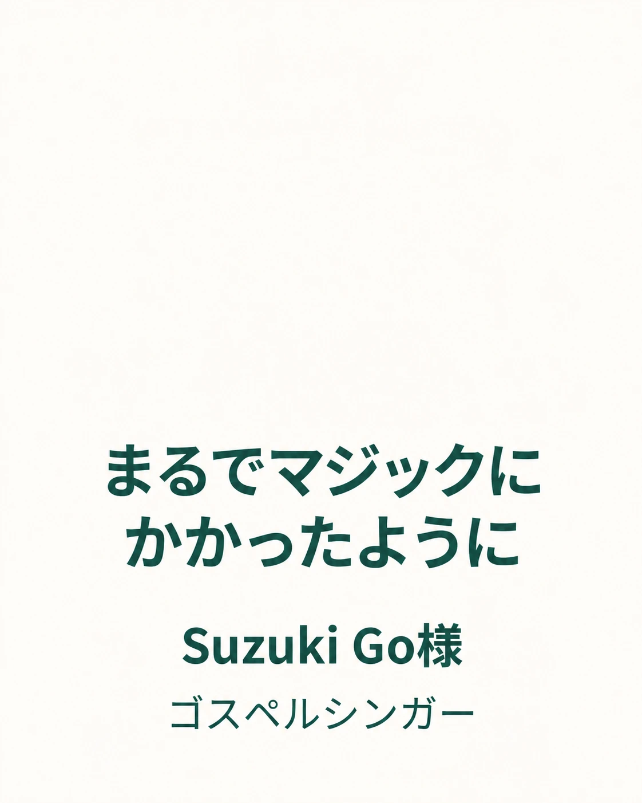
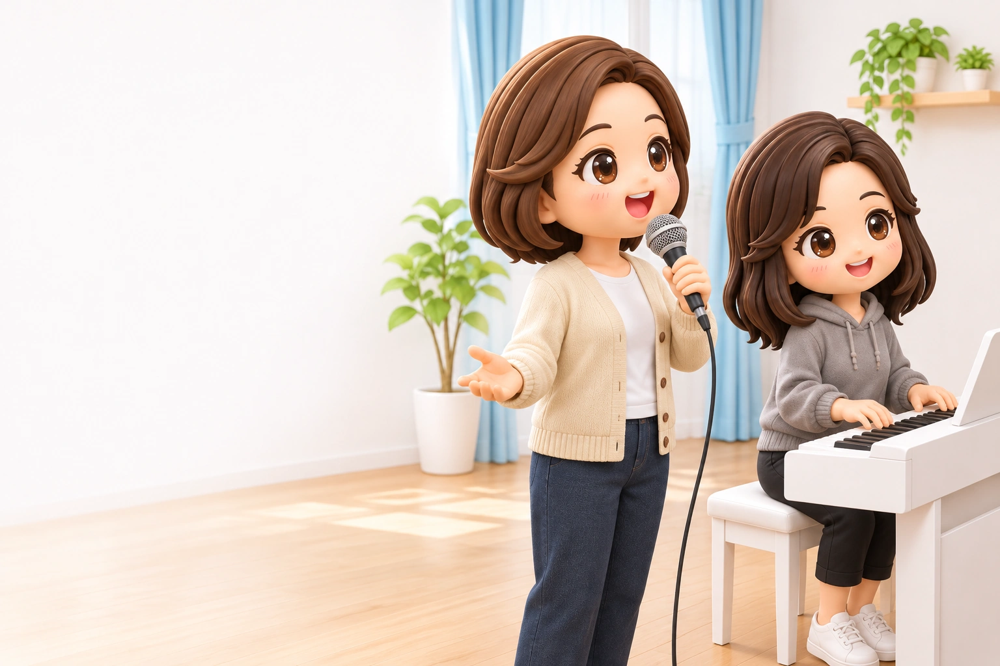
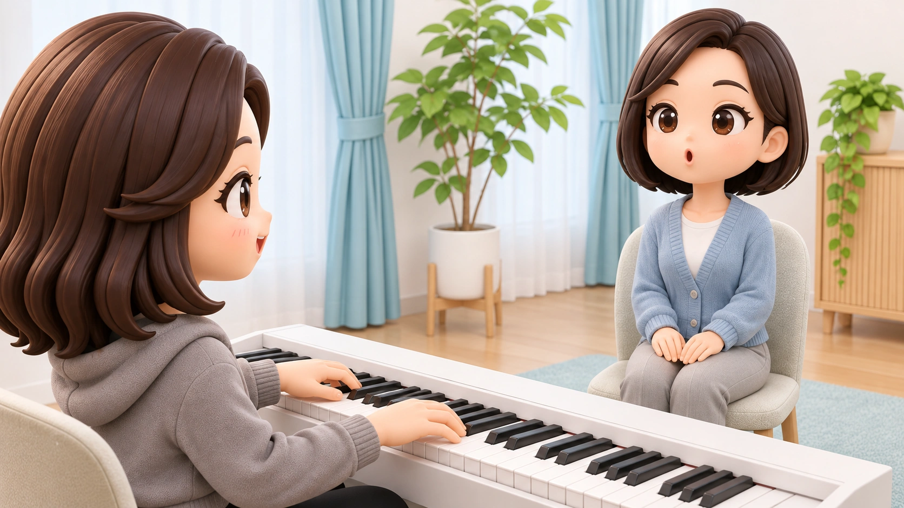
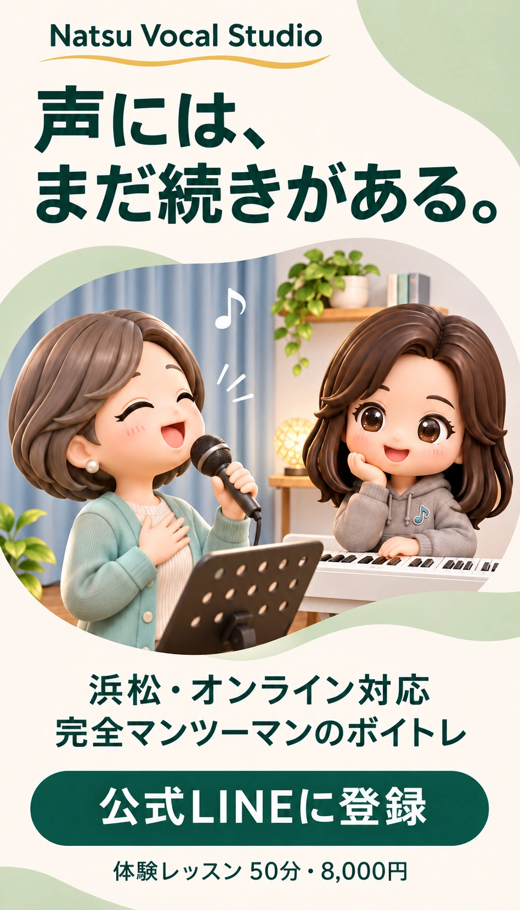
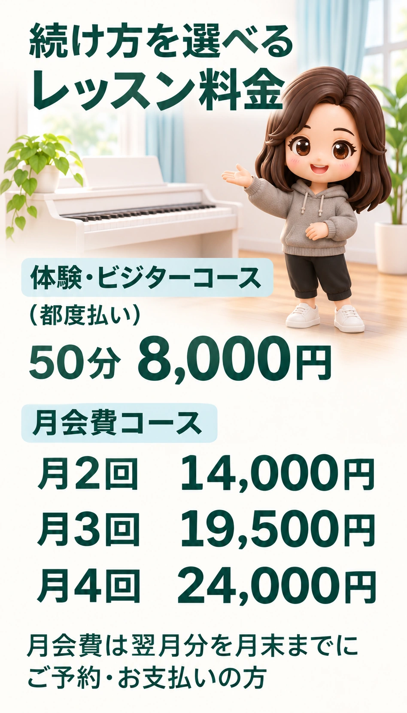
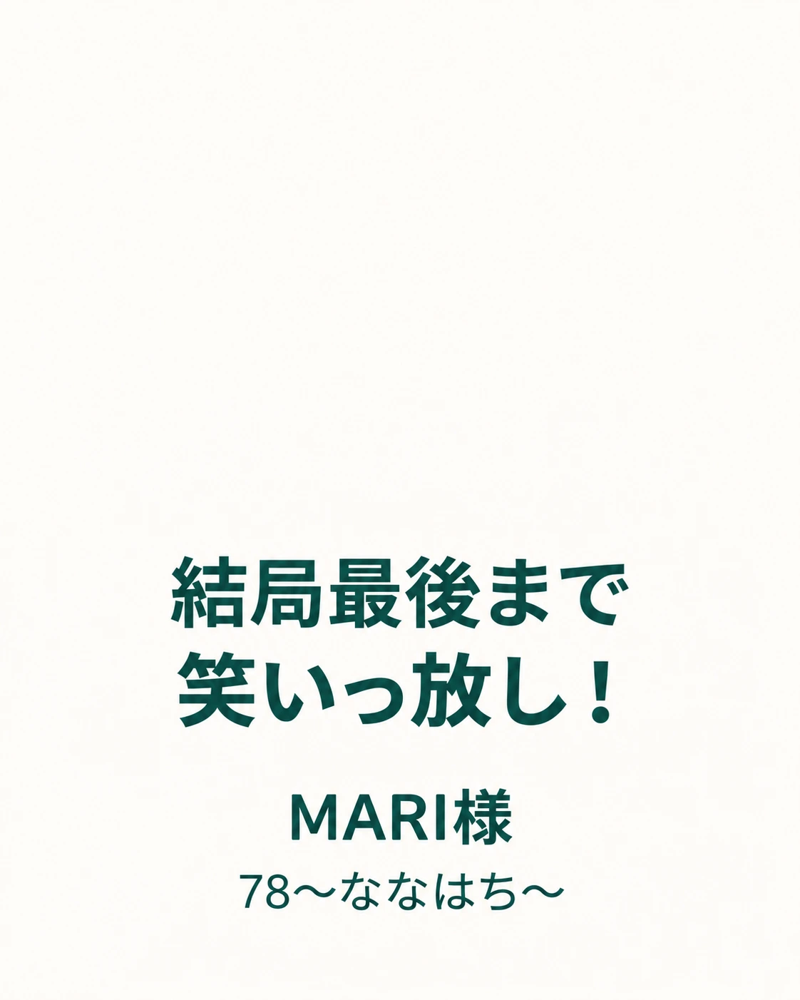
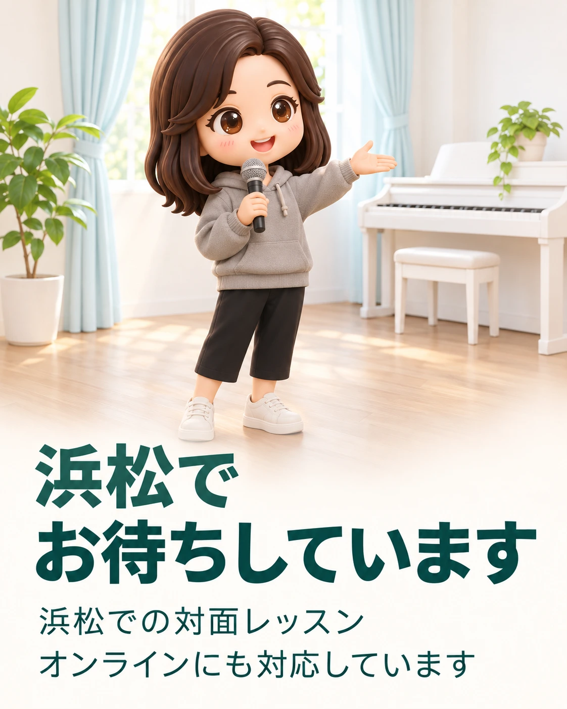

感想を全文読む
「レッスンに行く度に、まるでマジックにかかったように歌声が変わっていきました。苦手な音や自分でも嫌いだった声色が改善され、できなかったビブラートや気付いていなかったクセも直してもらいました。私の人生に張りと目標を与えてくれた、本当に素晴らしいボイストレーナーです。」
Suzuki Go様 （ゴスペルシンガー）

歌いたい曲や気になることを聞き
いまの声を一緒に確認

声や課題に合わせて
エクササイズを組み立てる

歌で試し レッスンの録音を
家での練習にも
| 体験・ビジターコース (都度払い) | 50分 8,000円 | |
|---|---|---|
| 月会費コース | 月2回 | 14,000円 |
| 月3回 | 19,500円 | |
| 月4回 | 24,000円 | |
月会費は翌月分を月末までに
ご予約・お支払いの方



公式LINEに登録歌いたい曲や気になることを聞き
いまの声を一緒に確認
声や課題に合わせて
エクササイズを組み立てる
歌で試し レッスンの録音を
家での練習にも


「レッスンに行く度に、まるでマジックにかかったように歌声が変わっていきました。苦手な音や自分でも嫌いだった声色が改善され、できなかったビブラートや気付いていなかったクセも直してもらいました。私の人生に張りと目標を与えてくれた、本当に素晴らしいボイストレーナーです。」
Suzuki Go様 （ゴスペルシンガー）


「これまでに歌のレッスンを受けたことはありますが、ボイストレーニングは初めてでした。ナツさんのお人柄か、結局最後まで笑いっ放し！でも、私の声をしっかり把握してくださっているので、短時間で声がぐんぐん変化していきました。毎回新しい発見や驚きがあるのも嬉しくて、自分の声をもっともっと追求したくなります。」
MARI様 （78〜ななはち〜）
